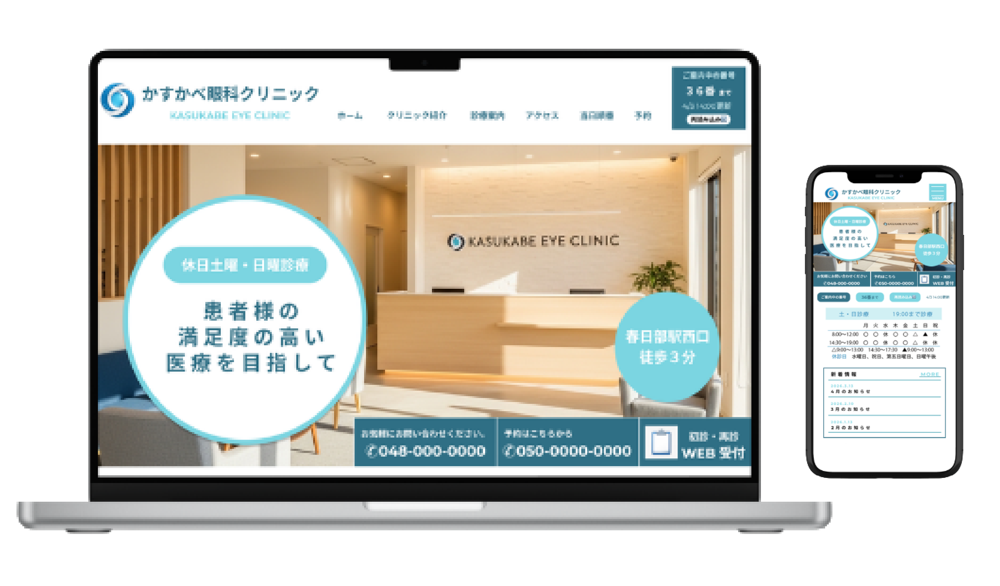
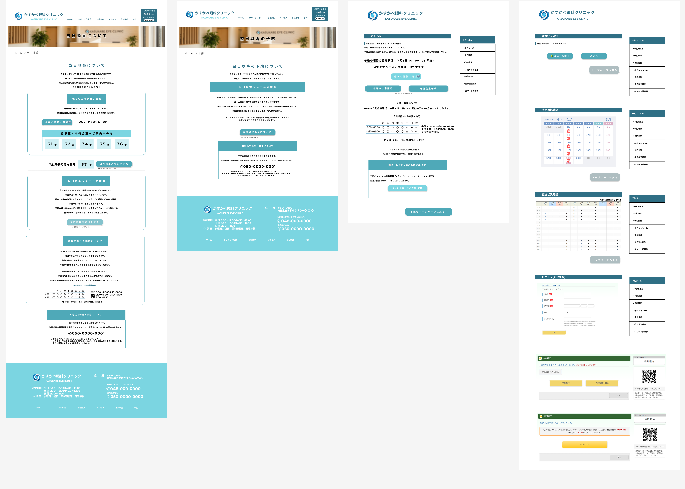

Web Design
かすかべ眼科クリニック（架空）のサイトデザイン
患者様が安心して利用できる、地域密着型の眼科クリニックサイトをデザインしました。

🔍 Observe（課題発見）
地元の眼科では待ち時間や予約方法が分かりづらく、不安を感じる場面がありました。
💡Think（解決策を考える）
来院前に情報が分かると、安心して受診できるのではないかと考えました。
Improve（より良くする）
待ち状況や予約導線を見やすく配置し、誰でも迷わず利用できる情報設計を行いました。
担当
デザイン使用ツール
Figma制作期間
3日Design Comp
デザインの方向性を確認するために制作したデザインカンプです。

